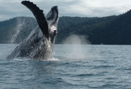

Descubre la Bahía Málaga
Bahía Málaga es sin duda alguna, un lugar mágico conocido por su abundante biodiversidad. Esta hermosa bahía cuenta con playas hermosas idóneas para el descanso y la desconexión de la ciudad..
Atractivos Turísticos

Las aguas a las afueras de Bahía Málaga son el lugar más accesible del país para observar a las ballenas jorobadas.Se pueden organizar excursiones en barco desde Buenaventura o Juanchaco para conocer de cerca a estos magníficos cetáceos mientras saltan y lanzan chorros de agua por los aires.
Juanchaco, Ladrilleros y La Barra
Estas playas quedan frente a la costa de Buenaventura, en el extremo más alejado del parque nacional. Juanchaco se destaca por tener las aguas más tranquilas, pero es la más desarrollada. Ladrilleros tiene una playa estrecha rodeada por acantilados bajos donde a veces, es posible observar ballenas. La Barra se trata de un pueblito en la jungla emplazado entre un bosque de manglares y una playa amplia, pero bastante ventosa.
Cascadas La Sierpe

un acantilado selvático directamente sobre el agua verde esmeralda de una ensenada de la bahía. Nadar hasta el punto donde la cascada se precipita es uno de esos momentos turísticos únicos que simplemente hay que vivir para creerlo. Se pueden visitar las cataratas en barco desde Juanchaco. La travesía dura aproximadamente 40 minutos.